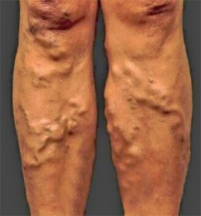
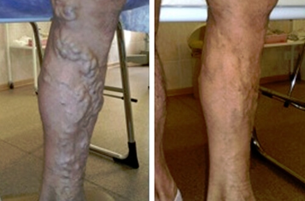
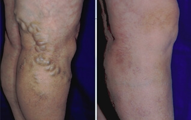
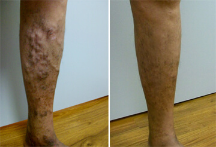

अब मुझे पैरों में असहनीय दर्द नहीं होता
क्या आपको भी लगता है वेरिकोज़ नसें कोई चिंता वाली चीज नहीं होती? मुझे भी ऐसा ही लगता था। लेकिन पैरों में असहनीय दर्द के कारण मेरी नौकरी जाते-जाते बची थी । वो तो मेरी किस्मत अच्छी थी, नहीं तो मेरा परिवार कैसे चलता।

नमस्कार दोस्तों, मेरा नाम अनुराग माथुर है और मैं छः साल से रिक्शा चला रहा हूँ। पिछले कुछ दिनों से मैं ठीक से काम नहीं कर पा रहा था और कोई सवारी ही नहीं मिलती थी।
मैं पैरों में दर्द के कारण ठीक से सो भी नहीं पाता था। दिन खत्म होने तक मेरी पूरी शक्ति चली जाती थी और न ठीक से शरीर को आराम मिल पाता था और न नींद हो पाती थी। मुझे पूरे समय दर्द रहता था , पूरे दिन और रात में भी। मुझे ऐसा लगता था किसी ने पैर की नसों में गर्म मोम भर दी हो। मेरी नसें ऐसे भद्दे साँपों जैसी दिखती थीं जो पैरों पर लिपटे हुए हों।
मैंने डॉक्टर को दिखाया। जब वेरिकोज़ नसों की बीमारी लंबे समय के कारण बिगड़ चुकी हो तो इलाज में बहुत पैसा खर्च होता है। एक बार दिखाने में ही डॉक्टर की फीस बहुत लग जाती है! इसके बाद नसों का अल्ट्रासाउंड और ब्लड-टेस्ट अलग होते हैं। दवाइयों से भी बहुत ज़्यादा फायदा नहीं होता है। दवाइयों का 2 महीने का या 3 महीनों का कोर्स होता है। जरा सोचिए इस सब में कितना पैसा खर्च हो जाता होगा? मैंने एक दवाई की दुकान वाले से खर्चे का आइडिया लिया तो वो हँस कर बोला "बहुत आएगा? लेकिन मैं तुम्हें एक दूसरा भरोसेमंद नुस्खा बता सकता हूँ यदि तुम मुझे एक पार्टी दो तो!"
खैर, पार्टी तो एक मज़ाक था, उसने मुझे वेरिकोज़ नसों के इलाज का नुस्खा बताया। वो थी नाम की एक जैल । इसे दवाई की दुकानों में नहीं बेचा जाता लेकिन मुझे आसानी से एक वेबसाइट का पता चल गया जहाँ से इसे खरीद सकते हैं। रिव्यूज़ के अनुसार, जैल से एक हफ्ते के अंदर आराम लग सकता है: इससे सूजन कम होती है और दर्द में आराम मिलता है । यहाँ तक कि गुच्छे बन चुकी नसें भी ठीक हो जाती हैं। इसका खर्च भी दवाई की दुकानों में बिकने वाली दवाइयों और क्रीमों से कम होता है। ये सब सोचकर मैंने ऑर्डर कर दिया।

मुझे पैरों पर जैल-वैल लगाने की आदत नहीं है, मैं कोई औरत थोड़े ही हूँ। लेकिन इसमें कोई दिक्कत नहीं हुई। आप अपनी पत्नी से कह सकते हैं कि वो इसे आपके पैरों में लगा दे।
कुछ दिनों बाद, मैंने देखा कि पैरों की सूजन काफी कम हो गई है । एक हफ्ते बाद नसें दिखना काफी का हो गया था। एक महीने में तो मैं दर्द नाम की चीज ही भूल गया! की मदद से मेरे पैर एकदम पहले जैसे ठीक हो गए!
अब मैं और अच्छा काम करके ज्यादा कमा पाता हूँ। पैर भी ठीक रहते हैं।
मैं आपको भी इस नुस्खे के बारे में बताना चाहता हूँ ताकि आपको दर्द और परेशानी से छुटकारा मिल सके। हाँ, जिन लोगों को तरह-तरह की दवाइयों से अपने शरीर में जहर भरने के लिए ढेरों पैसे खर्च करने हैं उनके लिए मैं कुछ नहीं कर सकता। जहाँ तक मेरा सवाल है, वेरिकोज़ नसें ठीक करने का एक स्मार्ट तरीका मौजूद है।
ये रही लिंक। ऑर्डर करें , को अपने पैरों पर लगाएँ और दर्द भूल जाएँ। इससे और आसान तो कुछ हो ही नहीं सकता!
अभी ऑर्डर करें
अरे मुझे भी ऐसी ही दिक्कत आई थी। रोज पैरों में पट्टी बांधनी पड़ती थी और भयंकर दर्द होता था। वाकई में असर करती है। देखिए मैं पहले कैसा था और अभी कैसा हूँ।
मुझे 20 साल की उम्र से वेरिकोज़ नसें हैं। ये हमारे परिवार में है। मुझे काम पर घंटों खड़े रहना पड़ता है। मैंने कई दवाइयाँ और देसी नुस्खे ट्राय करके देखे हैं। थोड़ा आराम तो मिला लेकिन दवाइयों पर बहुत पैसा खर्च हो जाता है, वहीं तो जैसे एक जादू है। आज मेरे पैर एक स्कूल जाने वाली लड़की जैसे अच्छे हैं!
मुझे तो पेट से होने के बाद वेरिकोज़ नसें हो गई थीं। मैं कोई दवाइयाँ नहीं ले सकती थी क्योंकि ये बच्चे के लिए ठीक नहीं होता। मेरे डॉक्टर ने मुझे ये जैल लेने को कहा। इस इलाज को जितनी जल्दी हो सके शुरू कर देना होता है नहीं तो आपको ऑपरेशन करवाना होगा!
मैंने कई दिन तक वेटर का काम किया जिससे पैरों पर बहुत असर पड़ा। मैंने कई तरह की क्रीमें लगाईं लेकिन कोई फायदा नहीं हुआ। पहले तो मुझे पर भरोसा नहीं होता था और लगता था इससे कोई फायदा नहीं होगा। मैं गलत था। एक बहुत बढ़िया जैल है ये।
मैंने भी के बारे में सुना है। इसे एक बार ट्राय करके देखता हूँ। काम से आने के बाद पैर ऐसे लगते हैं जैसे किसी ने पत्थर भर दिए हों।
मेरी सास के पैरों में बड़ा दर्द रहता था। मुझे समझ नहीं आता था उनकी कैसे मदद करूँ। फिर मुझे ये जैल मिली और मैंने उनसे कहा कि इसे ट्राय करके देखो। इससे बड़ा फायदा होता है! मैंने भी सावधानी के तौर पर इसे लगाने लगी हूँ जिससे रोकथाम हो सके।
मुझे लगता था मेरी नसें फट जाएंगी। आप खुद ही देख लीजिए, ये कितनी खराब लगती हैं। से ये 2 हफ्तों में ठीक हो गईं। अब हर चीज बढ़िया है। जिन लोगों ने इसे बनाया है उनके दिमाग की दाद देनी पड़ेगी।
मुझे नहीं पता था कि वेरिकोज़ नसें आदमियों को भी होती हैं। मुझे लगता था ये औरतों की बीमारी है। वैसे मेरे पैरों में रात को बहुत दर्द होता है। मुझे खरीदनी पड़ेगी।
मैंने कुछ जैल ट्राय कीं लेकिन कोई फायदा नहीं हुआ। मुझे लगा इनमें से कोई काम नहीं करेगी। क्या ये असर करेगी?
दवाइयों से नसें ठीक होने वाली नहीं हैं। जब तक दवाई लोगे, दर्द नहीं होगा लेकिन नसें ऊपर से तो दिखेंगी ही। आपको जैसी कोई जैल ही लगानी चाहिए।
मुझे इंट्राडर्मल वेराइसेस है। इसमें पैरों में कई छोटी-छोटी नसें नज़र आने लगती हैं। डॉक्टर ने कहा कि ये ठीक है। लेकिन ये बहुत खराब दिखती हैं! मुझे ऐसे बदसूरत पैर नहीं चाहिए।
निधि तुम लगाओ और सब ठीक हो जाएगा। किसी दूसरे डॉक्टर को दिखाओ। अभी ये सिर्फ इंट्राडर्मल वेराइसेस हैं लेकिन आगे चलकर वेरिकोज़ नसें बन जाएंगी।
मुझे भी काम पर काफी देर तक खड़े रहना पड़ता है। ऐसा है तो सावधानी के लिए खरीद लेता हूँ।
बहुत बढ़िया। ये जल्दी सूख जाती है और कपड़ों पर दाग नहीं लगते। और ये बहुत असरदार भी है।